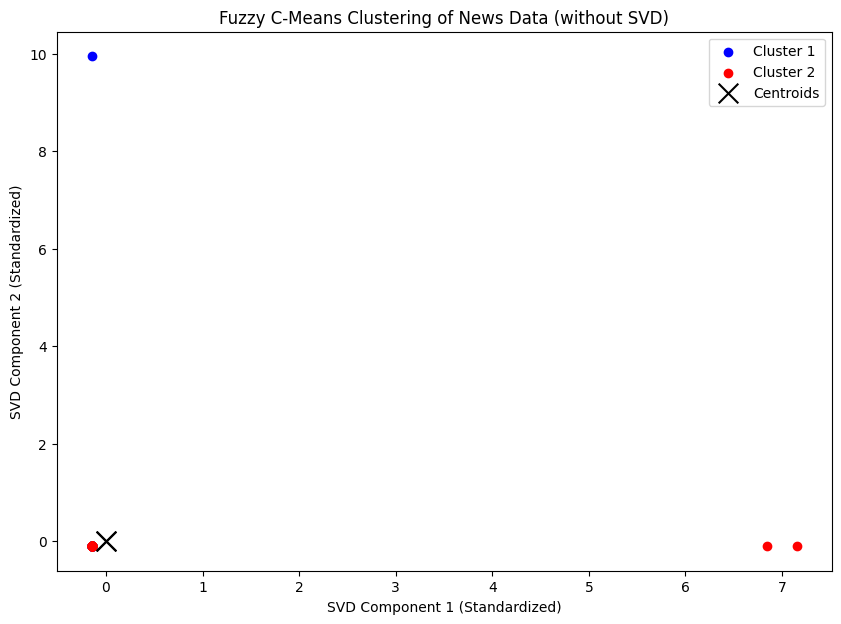
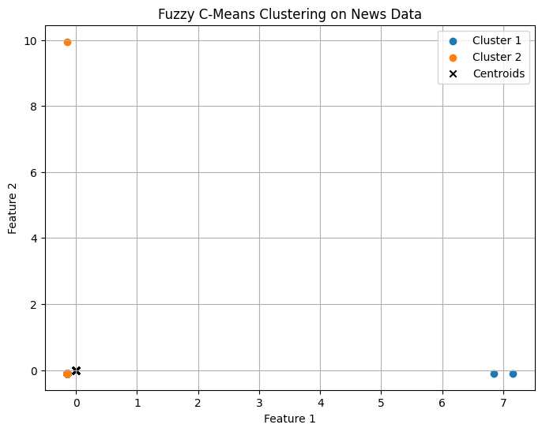
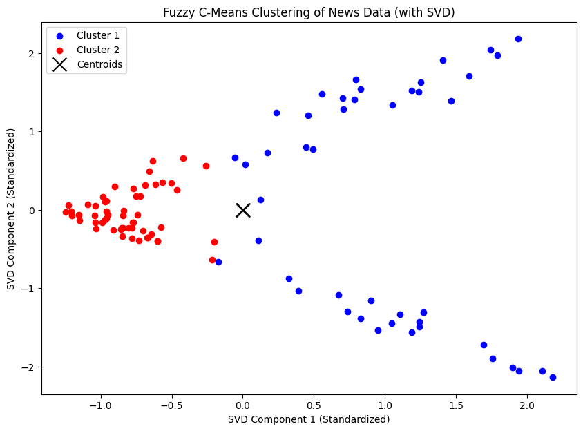
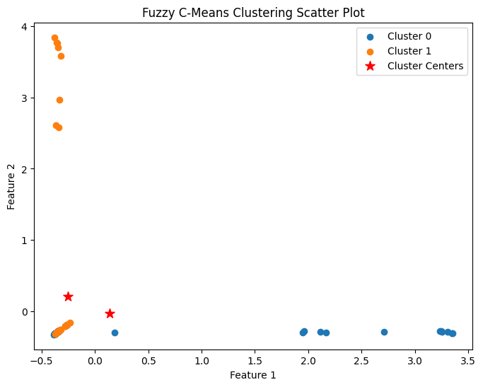

Percobaan 1: Cluster Fuzzy C Means LIB(FCM)#
!pip install scikit-fuzzy
!pip install fuzzy-c-means
Requirement already satisfied: scikit-fuzzy in /usr/local/lib/python3.10/dist-packages (0.5.0)
Requirement already satisfied: fuzzy-c-means in /usr/local/lib/python3.10/dist-packages (1.7.2)
Requirement already satisfied: joblib<2.0.0,>=1.2.0 in /usr/local/lib/python3.10/dist-packages (from fuzzy-c-means) (1.4.2)
Requirement already satisfied: numpy<2.0.0,>=1.21.1 in /usr/local/lib/python3.10/dist-packages (from fuzzy-c-means) (1.26.4)
Requirement already satisfied: pydantic<3.0.0,>=2.6.4 in /usr/local/lib/python3.10/dist-packages (from fuzzy-c-means) (2.9.2)
Requirement already satisfied: tabulate<0.9.0,>=0.8.9 in /usr/local/lib/python3.10/dist-packages (from fuzzy-c-means) (0.8.10)
Requirement already satisfied: tqdm<5.0.0,>=4.64.1 in /usr/local/lib/python3.10/dist-packages (from fuzzy-c-means) (4.66.6)
Requirement already satisfied: typer<0.10.0,>=0.9.0 in /usr/local/lib/python3.10/dist-packages (from fuzzy-c-means) (0.9.4)
Requirement already satisfied: annotated-types>=0.6.0 in /usr/local/lib/python3.10/dist-packages (from pydantic<3.0.0,>=2.6.4->fuzzy-c-means) (0.7.0)
Requirement already satisfied: pydantic-core==2.23.4 in /usr/local/lib/python3.10/dist-packages (from pydantic<3.0.0,>=2.6.4->fuzzy-c-means) (2.23.4)
Requirement already satisfied: typing-extensions>=4.6.1 in /usr/local/lib/python3.10/dist-packages (from pydantic<3.0.0,>=2.6.4->fuzzy-c-means) (4.12.2)
Requirement already satisfied: click<9.0.0,>=7.1.1 in /usr/local/lib/python3.10/dist-packages (from typer<0.10.0,>=0.9.0->fuzzy-c-means) (8.1.7)
import pandas as pd
import numpy as np
from sklearn.feature_extraction.text import TfidfVectorizer
from sklearn.preprocessing import StandardScaler
from sklearn.decomposition import TruncatedSVD # Import TruncatedSVD untuk reduksi dimensi
import skfuzzy as fuzz
import matplotlib.pyplot as plt
from fcmeans import FCM
from sklearn.metrics import silhouette_score
from google.colab import drive
drive.mount('/content/drive')
Drive already mounted at /content/drive; to attempt to forcibly remount, call drive.mount("/content/drive", force_remount=True).
import pandas as pd
df = pd.read_csv("/content/drive/My Drive/PPW-A/report/Tugas-PPW/hasil_preprocesing.csv")
df.head()
| judul | isi | tanggal | kategori | Hasil cleansing | Hasil case_folding | tokenize | Hasil stopword | |
|---|---|---|---|---|---|---|---|---|
| 0 | Asian Esports Games 2024: Timnas Indonesia Mob... | Jakarta - Indonesia berhasil meraih juara di k... | Rabu, 27 Nov 2024 21:13 WIB | Games | Jakarta Indonesia berhasil meraih juara di ko... | jakarta indonesia berhasil meraih juara di ko... | ['jakarta', 'indonesia', 'berhasil', 'meraih',... | jakarta indonesia berhasil meraih juara kompet... |
| 1 | 20 Game Android yang Diadaptasi dari Anime, Ad... | Jakarta - Sepertinya sederet game Android ini ... | Selasa, 26 Nov 2024 20:04 WIB | Games | Jakarta Sepertinya sederet game Android ini a... | jakarta sepertinya sederet game android ini a... | ['jakarta', 'sepertinya', 'sederet', 'game', '... | jakarta sederet game android favorit wibu deh ... |
| 2 | Jadwal M6 Mobile legends, Wakil Indonesia Main... | Jakarta - Setelah fase wild card berakhir, kes... | Selasa, 26 Nov 2024 14:10 WIB | Games | Jakarta Setelah fase wild card berakhir keser... | jakarta setelah fase wild card berakhir keser... | ['jakarta', 'setelah', 'fase', 'wild', 'card',... | jakarta fase wild card keseruan m mobile legen... |
| 3 | Tips dan Cara Main Pokemon TCG Pocket, Pemula ... | Jakarta - Pokemon Trading Card Game (TCG) Pock... | Selasa, 26 Nov 2024 12:40 WIB | Games | Jakarta Pokemon Trading Card Game TCG Pocket ... | jakarta pokemon trading card game tcg pocket ... | ['jakarta', 'pokemon', 'trading', 'card', 'gam... | jakarta pokemon trading card game tcg pocket s... |
| 4 | Indonesia Ikut Asian Esports Games 2024 Bangko... | Jakarta - Indonesia berpartisipasi dalam Asian... | Selasa, 26 Nov 2024 09:06 WIB | Games | Jakarta Indonesia berpartisipasi dalam Asian ... | jakarta indonesia berpartisipasi dalam asian ... | ['jakarta', 'indonesia', 'berpartisipasi', 'da... | jakarta indonesia berpartisipasi asian esports... |
texts = df['Hasil stopword']
# Step 2: Vektorisasi TF-IDF
tfidf_vectorizer = TfidfVectorizer()
tfidf_matrix = tfidf_vectorizer.fit_transform(texts)
X_tfidf = tfidf_matrix.toarray()
# Mendapatkan nama fitur dari TF-IDF
feature_names = tfidf_vectorizer.get_feature_names_out()
# Konversi TF-IDF hasil training ke DataFrame
df_train_tfidf = pd.DataFrame(tfidf_matrix.toarray(), columns=feature_names)
df_train_tfidf
df_train_tfidf.to_csv("tf-idf.csv", index=False)
# Step 4: Reduksi Dimensi menggunakan SVD
svd = TruncatedSVD(n_components=2) # Misalnya, reduksi ke 2 dimensi untuk visualisasi
X_svd = svd.fit_transform(X_tfidf) # Mengaplikasikan SVD
X_svd.shape
(100, 2)
# Step 3: Standarisasi Data TF-IDF
scaler = StandardScaler()
X_scaled = scaler.fit_transform(X_svd)
# Step 5: Inisialisasi dan Pelatihan Model Fuzzy C-Means
n_clusters = 2 # Tentukan jumlah klaster yang diinginkan
fuzziness_m = 9.0 # Eksponen fuzziness
max_iter = 1000 # Iterasi maksimum
error = 1e-3 # Toleransi konvergensi
fcm = FCM(n_clusters=n_clusters, m=fuzziness_m, max_iter=max_iter, error=error)
fcm.fit(X_scaled)
# Step 6: Mendapatkan Hasil Clustering
u = fcm.u # Matriks keanggotaan
predicted_labels = fcm.predict(X_scaled) # Label klaster untuk setiap dokumen
centers = fcm.centers # Koordinat pusat klaster
# Menentukan cluster untuk setiap data berdasarkan keanggotaan tertinggi
cluster_labels = np.argmax(u, axis=0)
# Menambahkan hasil klasterisasi ke dalam DataFrame
df['Cluster'] = cluster_labels
# Menampilkan jumlah data pada setiap cluster
cluster_counts = df['Cluster'].value_counts()
print("Jumlah data pada setiap cluster:")
print(cluster_counts)
---------------------------------------------------------------------------
ValueError Traceback (most recent call last)
<ipython-input-11-6aaf5f8232c2> in <cell line: 5>()
3
4 # Menambahkan hasil klasterisasi ke dalam DataFrame
----> 5 df['Cluster'] = cluster_labels
6
7 # Menampilkan jumlah data pada setiap cluster
/usr/local/lib/python3.10/dist-packages/pandas/core/frame.py in __setitem__(self, key, value)
4309 else:
4310 # set column
-> 4311 self._set_item(key, value)
4312
4313 def _setitem_slice(self, key: slice, value) -> None:
/usr/local/lib/python3.10/dist-packages/pandas/core/frame.py in _set_item(self, key, value)
4522 ensure homogeneity.
4523 """
-> 4524 value, refs = self._sanitize_column(value)
4525
4526 if (
/usr/local/lib/python3.10/dist-packages/pandas/core/frame.py in _sanitize_column(self, value)
5264
5265 if is_list_like(value):
-> 5266 com.require_length_match(value, self.index)
5267 arr = sanitize_array(value, self.index, copy=True, allow_2d=True)
5268 if (
/usr/local/lib/python3.10/dist-packages/pandas/core/common.py in require_length_match(data, index)
571 """
572 if len(data) != len(index):
--> 573 raise ValueError(
574 "Length of values "
575 f"({len(data)}) "
ValueError: Length of values (2) does not match length of index (100)
# import numpy as np
# # Hitung jumlah data dalam setiap klaster
# for i in range(n_clusters):
# count = np.sum(predicted_labels == i)
# print(f"Jumlah data dalam Klaster {i+1}: {count}")
from sklearn.metrics import silhouette_score
# Hitung silhouette score
silhouette_avg = silhouette_score(X_scaled, cluster_labels)
# Plot hasil clustering
plt.figure(figsize=(12, 8))
for i in range(n_clusters):
plt.scatter(X_scaled[cluster_labels == i, 0], X_scaled[cluster_labels == i, 1],
color=cmap(i), label=f'Klaster {i+1}', alpha=0.6)
# Menampilkan pusat klaster
plt.scatter(centers[:, 0], centers[:, 1], c='red', marker='X', s=250, label='Pusat Klaster', edgecolor='black')
plt.title(f'Fuzzy C-Means Clustering pada Dokumen Berita (Silhouette Score: {silhouette_avg:.2f})', fontsize=16)
plt.xlabel('Komponen SVD 1', fontsize=14)
plt.ylabel('Komponen SVD 2', fontsize=14)
plt.grid(True, linestyle='--', alpha=0.5)
plt.legend()
plt.show()
---------------------------------------------------------------------------
NameError Traceback (most recent call last)
<ipython-input-26-585d7aea06fd> in <cell line: 9>()
9 for i in range(n_clusters):
10 plt.scatter(X_scaled[cluster_labels == i, 0], X_scaled[cluster_labels == i, 1],
---> 11 color=cmap(i), label=f'Klaster {i+1}', alpha=0.6)
12
13 # Menampilkan pusat klaster
NameError: name 'cmap' is not defined
<Figure size 1200x800 with 0 Axes>
# (Opsional) Evaluasi hasil clustering dengan label asli
from sklearn.metrics import adjusted_rand_score
ari_score = adjusted_rand_score(labels, predicted_labels)
print(f"Adjusted Rand Index (ARI) Score: {ari_score:.4f}")
Test fuzzy c-means 1 (Tanpa SVD)#
from google.colab import drive
drive.mount('/content/drive')
Drive already mounted at /content/drive; to attempt to forcibly remount, call drive.mount("/content/drive", force_remount=True).
import pandas as pd
df = pd.read_csv("/content/drive/My Drive/PPW-A/report/Tugas-PPW/hasil_preprocesing.csv")
df.head()
| judul | isi | tanggal | kategori | Hasil cleansing | Hasil case_folding | tokenize | Hasil stopword | |
|---|---|---|---|---|---|---|---|---|
| 0 | 18 Tim yang Lolos FFWS Global Finals 2024 di B... | Jakarta - Rangkaian pertandingan di FFWS SEA 2... | Rabu, 16 Okt 2024 19:30 WIB | Games | Jakarta Rangkaian pertandingan di FFWS SEA F... | jakarta rangkaian pertandingan di ffws sea f... | ['jakarta', 'rangkaian', 'pertandingan', 'di',... | jakarta rangkaian pertandingan ffws sea fall s... |
| 1 | Ampun Bang Jago! Zuckerberg Klaim Pemain Handa... | Jakarta - CEO Meta Mark Zuckerberg, cukup perc... | Rabu, 16 Okt 2024 17:50 WIB | Games | Jakarta CEO Meta Mark Zuckerberg cukup percay... | jakarta ceo meta mark zuckerberg cukup percay... | ['jakarta', 'ceo', 'meta', 'mark', 'zuckerberg... | jakarta ceo meta mark zuckerberg percaya kemam... |
| 2 | 20 Game Horor Terbaik Tahun 2000an, Udah Perna... | Jakarta - Game horor selalu punya daya tarikny... | Rabu, 16 Okt 2024 14:20 WIB | Games | Jakarta Game horor selalu punya daya tariknya... | jakarta game horor selalu punya daya tariknya... | ['jakarta', 'game', 'horor', 'selalu', 'punya'... | jakarta game horor daya tariknya penikmatnya b... |
| 3 | Begini Cara Dapat Skin Zhou Yu HOK Gratis, Gam... | Jakarta - Ternyata cara dapat skin Zhou Yu Hon... | Rabu, 16 Okt 2024 12:15 WIB | Games | Jakarta Ternyata cara dapat skin Zhou Yu Hono... | jakarta ternyata cara dapat skin zhou yu hono... | ['jakarta', 'ternyata', 'cara', 'dapat', 'skin... | jakarta skin zhou yu honor of kings hok gratis... |
| 4 | Gagal Juara FFWS SEA 2024 Fall, Wakil RI: Kita... | Jakarta - Tampil di depan ribuan pendukungnya,... | Selasa, 15 Okt 2024 17:36 WIB | Games | Jakarta Tampil di depan ribuan pendukungnya t... | jakarta tampil di depan ribuan pendukungnya t... | ['jakarta', 'tampil', 'di', 'depan', 'ribuan',... | jakarta tampil ribuan pendukungnya wakil indon... |
!pip install scikit-fuzzy
# Import libraries yang diperlukan
import pandas as pd
import numpy as np
import matplotlib.pyplot as plt
import skfuzzy as fuzz
from sklearn.feature_extraction.text import TfidfVectorizer
from sklearn.preprocessing import StandardScaler
Requirement already satisfied: scikit-fuzzy in /usr/local/lib/python3.10/dist-packages (0.5.0)
texts = df['Hasil stopword']
# Preprocessing: TF-IDF
tfidf = TfidfVectorizer()
tfidf_matrix = tfidf.fit_transform(texts)
tfidf_array = tfidf_matrix.toarray()
# Normalisasi fitur
scaler = StandardScaler()
X_scaled = scaler.fit_transform(tfidf_array)
n_clusters = 2 # Jumlah cluster yang diinginkan
cntr, u, _, _, _, _, _ = fuzz.cluster.cmeans(
X_scaled.T, c=n_clusters, m=2, error=0.001, maxiter=1000, init=None
)
# Menentukan cluster untuk setiap data berdasarkan keanggotaan tertinggi
cluster_labels = np.argmax(u, axis=0)
# Visualisasi hasil klasterisasi
plt.figure(figsize=(10, 7))
colors = ['b', 'r']
for i in range(n_clusters):
plt.scatter(X_scaled[cluster_labels == i, 0], X_scaled[cluster_labels == i, 1],
color=colors[i], label=f'Cluster {i+1}')
# Menampilkan pusat cluster
plt.scatter(cntr[:, 0], cntr[:, 1], marker='x', s=200, color='k', label='Centroids')
plt.xlabel('SVD Component 1 (Standardized)')
plt.ylabel('SVD Component 2 (Standardized)')
plt.title('Fuzzy C-Means Clustering of News Data (without SVD)')
plt.legend()
plt.show()

# Tentukan jumlah cluster dan parameter fuzziness
n_clusters = 2
m = 2 # Parameter fuzziness
# Terapkan Fuzzy C-Means
cntr, u, u0, d, jm, p, fpc = fuzz.cluster.cmeans(
X_scaled.T, n_clusters, m, error=0.001, maxiter=1000, init=None
)
# Tentukan keanggotaan cluster
cluster_membership = np.argmax(u, axis=0)
# Visualisasi Hasil Clustering
plt.figure(figsize=(8, 6))
for i in range(n_clusters):
plt.scatter(X_scaled[cluster_membership == i, 0], X_scaled[cluster_membership == i, 1], label=f'Cluster {i+1}')
# Tampilkan centroid
plt.scatter(cntr[0], cntr[1], marker='x', color='black', label='Centroids')
plt.title('Fuzzy C-Means Clustering on News Data')
plt.xlabel('Feature 1')
plt.ylabel('Feature 2')
plt.legend()
plt.grid(True)
plt.show()
# Evaluasi Hasil
print("Fuzzy Partition Coefficient (FPC):", fpc)

Fuzzy Partition Coefficient (FPC): 0.5000000000320959
Test fuzzy c-means (SVD)#
from google.colab import drive
drive.mount('/content/drive')
Drive already mounted at /content/drive; to attempt to forcibly remount, call drive.mount("/content/drive", force_remount=True).
import pandas as pd
df = pd.read_csv("/content/drive/My Drive/PPW-A/report/Tugas-PPW/hasil_preprocesing.csv")
df.head()
| judul | isi | tanggal | kategori | Hasil cleansing | Hasil case_folding | tokenize | Hasil stopword | |
|---|---|---|---|---|---|---|---|---|
| 0 | 18 Tim yang Lolos FFWS Global Finals 2024 di B... | Jakarta - Rangkaian pertandingan di FFWS SEA 2... | Rabu, 16 Okt 2024 19:30 WIB | Games | Jakarta Rangkaian pertandingan di FFWS SEA F... | jakarta rangkaian pertandingan di ffws sea f... | ['jakarta', 'rangkaian', 'pertandingan', 'di',... | jakarta rangkaian pertandingan ffws sea fall s... |
| 1 | Ampun Bang Jago! Zuckerberg Klaim Pemain Handa... | Jakarta - CEO Meta Mark Zuckerberg, cukup perc... | Rabu, 16 Okt 2024 17:50 WIB | Games | Jakarta CEO Meta Mark Zuckerberg cukup percay... | jakarta ceo meta mark zuckerberg cukup percay... | ['jakarta', 'ceo', 'meta', 'mark', 'zuckerberg... | jakarta ceo meta mark zuckerberg percaya kemam... |
| 2 | 20 Game Horor Terbaik Tahun 2000an, Udah Perna... | Jakarta - Game horor selalu punya daya tarikny... | Rabu, 16 Okt 2024 14:20 WIB | Games | Jakarta Game horor selalu punya daya tariknya... | jakarta game horor selalu punya daya tariknya... | ['jakarta', 'game', 'horor', 'selalu', 'punya'... | jakarta game horor daya tariknya penikmatnya b... |
| 3 | Begini Cara Dapat Skin Zhou Yu HOK Gratis, Gam... | Jakarta - Ternyata cara dapat skin Zhou Yu Hon... | Rabu, 16 Okt 2024 12:15 WIB | Games | Jakarta Ternyata cara dapat skin Zhou Yu Hono... | jakarta ternyata cara dapat skin zhou yu hono... | ['jakarta', 'ternyata', 'cara', 'dapat', 'skin... | jakarta skin zhou yu honor of kings hok gratis... |
| 4 | Gagal Juara FFWS SEA 2024 Fall, Wakil RI: Kita... | Jakarta - Tampil di depan ribuan pendukungnya,... | Selasa, 15 Okt 2024 17:36 WIB | Games | Jakarta Tampil di depan ribuan pendukungnya t... | jakarta tampil di depan ribuan pendukungnya t... | ['jakarta', 'tampil', 'di', 'depan', 'ribuan',... | jakarta tampil ribuan pendukungnya wakil indon... |
!pip install scikit-fuzzy
# Import libraries yang diperlukan
import numpy as np
import pandas as pd
import skfuzzy as fuzz
import matplotlib.pyplot as plt
from sklearn.feature_extraction.text import TfidfVectorizer
from sklearn.decomposition import TruncatedSVD
from sklearn.preprocessing import StandardScaler
Requirement already satisfied: scikit-fuzzy in /usr/local/lib/python3.10/dist-packages (0.5.0)
texts = df['Hasil stopword']
# Preprocessing: TF-IDF
tfidf = TfidfVectorizer()
tfidf_matrix = tfidf.fit_transform(texts)
tfidf_array = tfidf_matrix.toarray()
# Reduksi dimensi menggunakan SVD
svd = TruncatedSVD(n_components=10, random_state=0)
data_2d = svd.fit_transform(tfidf_array)
# Normalisasi dengan StandardScaler
scaler = StandardScaler()
data_2d_normalized = scaler.fit_transform(data_2d)
import numpy as np
import skfuzzy as fuzz
from sklearn.preprocessing import StandardScaler
# Anggap data_2d_normalized adalah hasil reduksi dimensi dan normalisasi data
np.random.seed(25)
n_clusters = 2
# Fuzzy C-Means Clustering
cntr, u, _, _, _, _, _ = fuzz.cluster.cmeans(
data_2d_normalized.T, c=n_clusters, m=7, error=0.001, maxiter=1000, init=None
)
# Menentukan cluster untuk setiap data berdasarkan keanggotaan tertinggi
cluster_labels = np.argmax(u, axis=0)
# Menambahkan hasil klasterisasi ke dalam DataFrame
df['Cluster'] = cluster_labels
# Menampilkan jumlah data pada setiap cluster
cluster_counts = df['Cluster'].value_counts()
print("Jumlah data pada setiap cluster:")
print(cluster_counts)
Jumlah data pada setiap cluster:
Cluster
1 55
0 45
Name: count, dtype: int64
# Menambahkan hasil klasterisasi ke dalam DataFrame
df['Cluster'] = cluster_labels
df
| judul | isi | tanggal | kategori | Hasil cleansing | Hasil case_folding | tokenize | Hasil stopword | Cluster | |
|---|---|---|---|---|---|---|---|---|---|
| 0 | 18 Tim yang Lolos FFWS Global Finals 2024 di B... | Jakarta - Rangkaian pertandingan di FFWS SEA 2... | Rabu, 16 Okt 2024 19:30 WIB | Games | Jakarta Rangkaian pertandingan di FFWS SEA F... | jakarta rangkaian pertandingan di ffws sea f... | ['jakarta', 'rangkaian', 'pertandingan', 'di',... | jakarta rangkaian pertandingan ffws sea fall s... | 0 |
| 1 | Ampun Bang Jago! Zuckerberg Klaim Pemain Handa... | Jakarta - CEO Meta Mark Zuckerberg, cukup perc... | Rabu, 16 Okt 2024 17:50 WIB | Games | Jakarta CEO Meta Mark Zuckerberg cukup percay... | jakarta ceo meta mark zuckerberg cukup percay... | ['jakarta', 'ceo', 'meta', 'mark', 'zuckerberg... | jakarta ceo meta mark zuckerberg percaya kemam... | 1 |
| 2 | 20 Game Horor Terbaik Tahun 2000an, Udah Perna... | Jakarta - Game horor selalu punya daya tarikny... | Rabu, 16 Okt 2024 14:20 WIB | Games | Jakarta Game horor selalu punya daya tariknya... | jakarta game horor selalu punya daya tariknya... | ['jakarta', 'game', 'horor', 'selalu', 'punya'... | jakarta game horor daya tariknya penikmatnya b... | 1 |
| 3 | Begini Cara Dapat Skin Zhou Yu HOK Gratis, Gam... | Jakarta - Ternyata cara dapat skin Zhou Yu Hon... | Rabu, 16 Okt 2024 12:15 WIB | Games | Jakarta Ternyata cara dapat skin Zhou Yu Hono... | jakarta ternyata cara dapat skin zhou yu hono... | ['jakarta', 'ternyata', 'cara', 'dapat', 'skin... | jakarta skin zhou yu honor of kings hok gratis... | 1 |
| 4 | Gagal Juara FFWS SEA 2024 Fall, Wakil RI: Kita... | Jakarta - Tampil di depan ribuan pendukungnya,... | Selasa, 15 Okt 2024 17:36 WIB | Games | Jakarta Tampil di depan ribuan pendukungnya t... | jakarta tampil di depan ribuan pendukungnya t... | ['jakarta', 'tampil', 'di', 'depan', 'ribuan',... | jakarta tampil ribuan pendukungnya wakil indon... | 0 |
| ... | ... | ... | ... | ... | ... | ... | ... | ... | ... |
| 95 | Rating Pemain China Vs Indonesia: Thom Haye Te... | Jakarta - China vs Indonesia tuntas 2-1 di lan... | Rabu, 16 Okt 2024 12:00 WIB | Sepak Bola | Jakarta China vs Indonesia tuntas di lanjuta... | jakarta china vs indonesia tuntas di lanjuta... | ['jakarta', 'china', 'vs', 'indonesia', 'tunta... | jakarta china vs indonesia tuntas lanjutan kua... | 0 |
| 96 | China Vs Indonesia: Coret Eliano Reijnders Blu... | Qingdao - Keputusan mencoret Eliano Reijnders ... | Rabu, 16 Okt 2024 11:40 WIB | Sepak Bola | Qingdao Keputusan mencoret Eliano Reijnders s... | qingdao keputusan mencoret eliano reijnders s... | ['qingdao', 'keputusan', 'mencoret', 'eliano',... | qingdao keputusan mencoret eliano reijnders me... | 0 |
| 97 | Dumfries Akui Performanya Lebih Baik di Timnas... | Jakarta - Denzel Dumfries mengakui, performany... | Rabu, 16 Okt 2024 11:20 WIB | Sepak Bola | Jakarta Denzel Dumfries mengakui performanya ... | jakarta denzel dumfries mengakui performanya ... | ['jakarta', 'denzel', 'dumfries', 'mengakui', ... | jakarta denzel dumfries mengakui performanya t... | 1 |
| 98 | Hasil Lengkap-Klasemen Kualifikasi Piala Dunia... | Jakarta - Matchday 4 di babak ketiga kualifika... | Rabu, 16 Okt 2024 11:00 WIB | Sepak Bola | Jakarta Matchday di babak ketiga kualifikasi... | jakarta matchday di babak ketiga kualifikasi... | ['jakarta', 'matchday', 'di', 'babak', 'ketiga... | jakarta matchday babak ketiga kualifikasi pial... | 0 |
| 99 | Spanyol Vs Serbia: De la Fuente Turunkan Start... | Jakarta - Pelatih Spanyol Luis de la Fuente me... | Rabu, 16 Okt 2024 10:43 WIB | Sepak Bola | Jakarta Pelatih Spanyol Luis de la Fuente men... | jakarta pelatih spanyol luis de la fuente men... | ['jakarta', 'pelatih', 'spanyol', 'luis', 'de'... | jakarta pelatih spanyol luis de la fuente menu... | 1 |
100 rows × 9 columns
# Visualisasi hasil klasterisasi
plt.figure(figsize=(10, 7))
colors = ['b', 'r']
for i in range(n_clusters):
plt.scatter(data_2d_normalized[cluster_labels == i, 0], data_2d_normalized[cluster_labels == i, 1],
color=colors[i], label=f'Cluster {i+1}')
# Menampilkan pusat cluster
plt.scatter(cntr[:, 0], cntr[:, 1], marker='x', s=200, color='k', label='Centroids')
plt.xlabel('SVD Component 1 (Standardized)')
plt.ylabel('SVD Component 2 (Standardized)')
plt.title('Fuzzy C-Means Clustering of News Data (with SVD)')
plt.legend()
plt.show()

from sklearn.metrics import silhouette_score, adjusted_rand_score
# Perhitungan silhouette score
sil_score = silhouette_score(data_2d_normalized, cluster_labels)
print(f"Silhouette Score: {sil_score}")
# Menambahkan kategori asli (Game atau Sepakbola) ke DataFrame
categories = df['kategori']
# Evaluasi kesesuaian cluster dengan kategori asli
ari_score = adjusted_rand_score(categories, cluster_labels)
print(f"Adjusted Rand Index (ARI): {ari_score}")
Silhouette Score: 0.17025244256098346
Adjusted Rand Index (ARI): -0.009696969696969697
Test fuzzy c-means 3#
from google.colab import drive
drive.mount('/content/drive')
Drive already mounted at /content/drive; to attempt to forcibly remount, call drive.mount("/content/drive", force_remount=True).
import pandas as pd
df = pd.read_csv("/content/drive/My Drive/PPW-A/report/Tugas-PPW/hasil_preprocesing.csv")
df.head()
| judul | isi | tanggal | kategori | Hasil cleansing | Hasil case_folding | tokenize | Hasil stopword | |
|---|---|---|---|---|---|---|---|---|
| 0 | 18 Tim yang Lolos FFWS Global Finals 2024 di B... | Jakarta - Rangkaian pertandingan di FFWS SEA 2... | Rabu, 16 Okt 2024 19:30 WIB | Games | Jakarta Rangkaian pertandingan di FFWS SEA F... | jakarta rangkaian pertandingan di ffws sea f... | ['jakarta', 'rangkaian', 'pertandingan', 'di',... | jakarta rangkaian pertandingan ffws sea fall s... |
| 1 | Ampun Bang Jago! Zuckerberg Klaim Pemain Handa... | Jakarta - CEO Meta Mark Zuckerberg, cukup perc... | Rabu, 16 Okt 2024 17:50 WIB | Games | Jakarta CEO Meta Mark Zuckerberg cukup percay... | jakarta ceo meta mark zuckerberg cukup percay... | ['jakarta', 'ceo', 'meta', 'mark', 'zuckerberg... | jakarta ceo meta mark zuckerberg percaya kemam... |
| 2 | 20 Game Horor Terbaik Tahun 2000an, Udah Perna... | Jakarta - Game horor selalu punya daya tarikny... | Rabu, 16 Okt 2024 14:20 WIB | Games | Jakarta Game horor selalu punya daya tariknya... | jakarta game horor selalu punya daya tariknya... | ['jakarta', 'game', 'horor', 'selalu', 'punya'... | jakarta game horor daya tariknya penikmatnya b... |
| 3 | Begini Cara Dapat Skin Zhou Yu HOK Gratis, Gam... | Jakarta - Ternyata cara dapat skin Zhou Yu Hon... | Rabu, 16 Okt 2024 12:15 WIB | Games | Jakarta Ternyata cara dapat skin Zhou Yu Hono... | jakarta ternyata cara dapat skin zhou yu hono... | ['jakarta', 'ternyata', 'cara', 'dapat', 'skin... | jakarta skin zhou yu honor of kings hok gratis... |
| 4 | Gagal Juara FFWS SEA 2024 Fall, Wakil RI: Kita... | Jakarta - Tampil di depan ribuan pendukungnya,... | Selasa, 15 Okt 2024 17:36 WIB | Games | Jakarta Tampil di depan ribuan pendukungnya t... | jakarta tampil di depan ribuan pendukungnya t... | ['jakarta', 'tampil', 'di', 'depan', 'ribuan',... | jakarta tampil ribuan pendukungnya wakil indon... |
!pip install scikit-fuzzy
import numpy as np
import pandas as pd
import matplotlib.pyplot as plt
from sklearn.decomposition import LatentDirichletAllocation
from sklearn.feature_extraction.text import TfidfVectorizer
import skfuzzy as fuzz
Requirement already satisfied: scikit-fuzzy in /usr/local/lib/python3.10/dist-packages (0.5.0)
# Lakukan preprocessing data menggunakan TF-IDF
tfidf = TfidfVectorizer()
X = tfidf.fit_transform(df['Hasil stopword']).toarray()
lda = LatentDirichletAllocation(n_components=5)
X_topic = lda.fit_transform(X)
# Normalisasi fitur
from sklearn.preprocessing import StandardScaler
scaler = StandardScaler()
X_normalized = scaler.fit_transform(X_topic)
# Implementasikan Fuzzy C-Means menggunakan Fuzzy library
n_clusters = 2
m = 8 # Fuzzy coefficient
max_iter = 1000
tol = 0.0005
cntr, u, _, _, _, _, _ = fuzz.cluster.cmeans(X_normalized.T, n_clusters, m, max_iter, tol)
# Dapatkan label cluster untuk setiap data
labels = np.argmax(u, axis=0)
import matplotlib.pyplot as plt
import seaborn as sns
import numpy as np
# Buat plot scatter
plt.figure(figsize=(8, 6))
for i in range(n_clusters):
cluster_data = X_normalized[labels == i]
plt.scatter(cluster_data[:, 0], cluster_data[:, 1], label=f'Cluster {i}')
plt.scatter(cntr[:, 0], cntr[:, 1], s=100, c='red', marker='*', label='Cluster Centers')
plt.title('Fuzzy C-Means Clustering Scatter Plot')
plt.xlabel('Feature 1')
plt.ylabel('Feature 2')
plt.legend()
plt.show()
